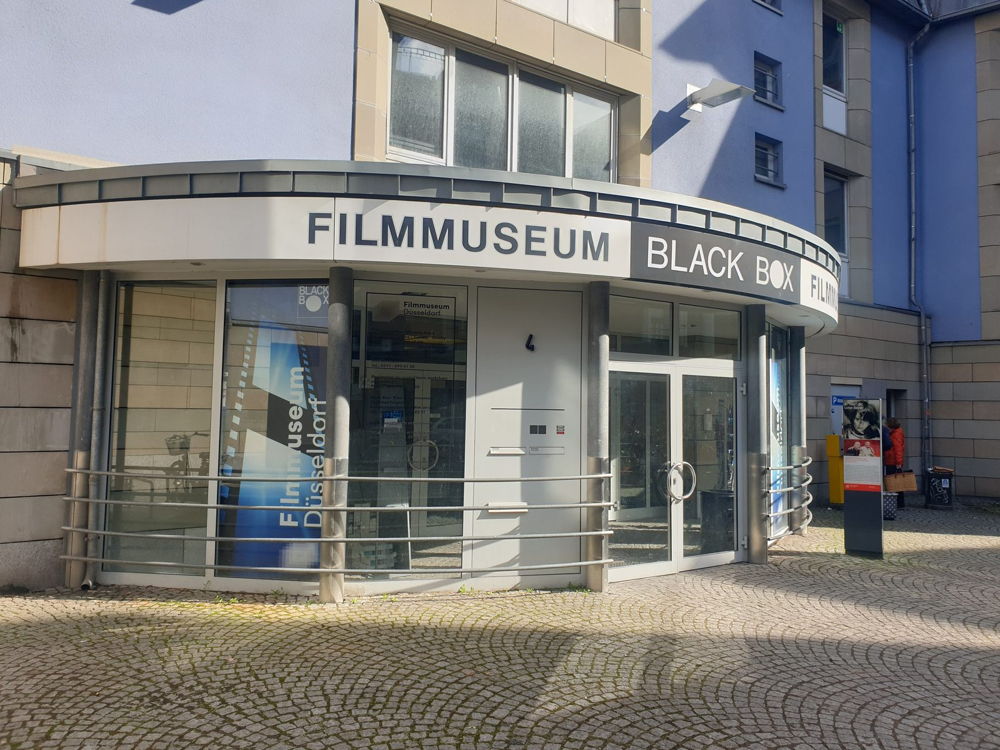

Geschichte & Geschichten
Filmstadt Düsseldorf
Klappe - Düsseldorf die Erste! Sie ist ein veritabler Filmstar.


Für amerikanische Ohren klingt der Name Düsseldorf prototypisch deutsch. Deshalb kommt die Stadt in etlichen Hollywood-Filmen vor, von „Willy Wonka“ über „Django Unchained“ und „The War Horse“ bis zu den „Simpsons“.
Die Stadt war Schauplatz für mehr als 80 Film- und Serienproduktionen – von Kultklassikern über Krimis bis zu aktuellen Netflix-Serien. Ihre Straßen und Brücken dienten als Drehorte und Kulissen für viele Filme, von „Cloud Atlas“ mit Tom Hanks und Halle Berry über „Die Katze“ mit Götz George bis zur Lindenstraße.
Zwei Düsseldorfer haben bereits einen Oscar gewonnen: Luise Rainer und Volker Bertelmann alias DJ Hauschka. Ein weiterer war nominiert: Wim Wenders.
Der WDR hat seine Landesstudios im Medienhafen. Dort wurden auch etliche Szenen zur Netflix-Serie „King of Stonks“ gedreht.
Interesse an dieser Tour?
Stellen Sie unverbindlich Ihre Anfrage für „Filmstadt Düsseldorf".